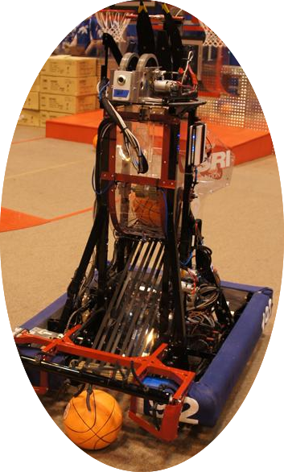

2012 FRC Challenge: Rebound Rumble
- Pre-Build Season Roles
- Organized outreach and mentor programs within the community
- Interacted with company sponsors to arrange showcasing events
- Trained rookies on using shop machines; I specifically instructed students on the band saws and hand tools
- Build Season Roles
- Co-lead the shooter mechanism group
- Operated the mechanisms during matches as the secondary driver

2013 FRC Challenge: Ultimate Ascent
- Pre-Build Season Roles
- Organized, led, and participated in mentoring a FIRST Lego League Team
- Trained rookies on safely and skillfully using the manual mill
- Build Season Roles
- Led the mechanism group in charge of ascending our robot 3-10 feet up a pyramid
- Operated the robot during regional and national competitions